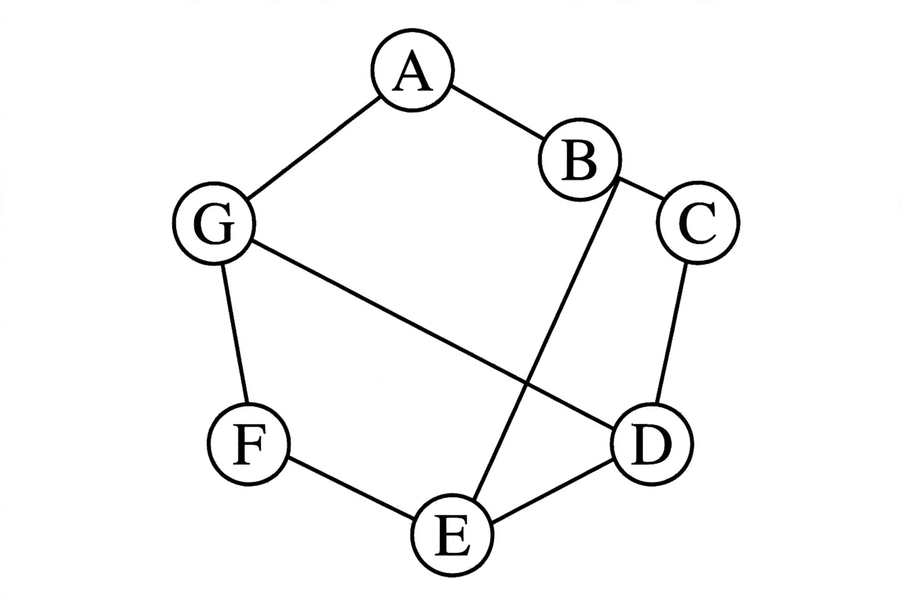

Discrete mathematics

[Image: A diagram of a graph with vertices and edges, a classic object of discrete mathematics]
Discrete mathematics is the study of mathematical structures that are fundamentally discrete rather than continuous. In contrast to real numbers, which vary smoothly, the objects of discrete mathematics — integers, graphs, and statements in logic — take distinct, separated values.
Discrete mathematics is the mathematical language of computer science: because digital computers manipulate information in discrete steps, the field underpins algorithms, data structures, cryptography, and software design. It is typically taught as a unified course covering logic, set theory, combinatorics, graph theory, and elementary number theory.
Main topics
Core areas include mathematical logic and Boolean algebra; set theory and relations; combinatorics, the study of counting; graph theory, the study of networks of vertices and edges; discrete probability; and the theory of computation, including automata and formal languages.
The field grew rapidly in the second half of the 20th century alongside computing. Problems such as scheduling, network routing, and error correction are naturally discrete, and results like the four-colour theorem — proved with substantial computer assistance — blurred the line between discrete mathematics and computation itself.
Applications
Discrete structures are used in designing and analysing algorithms, in compiler and database design, in cryptography and coding theory, and in operations research. Concepts such as Boolean algebra also describe the logic gates from which digital circuits are built.
See also
- Graph theory
- Combinatorics
- Mathematical logic
- Boolean algebra
- Set theory
- Computer science
- Number theory
- Mathematical proof